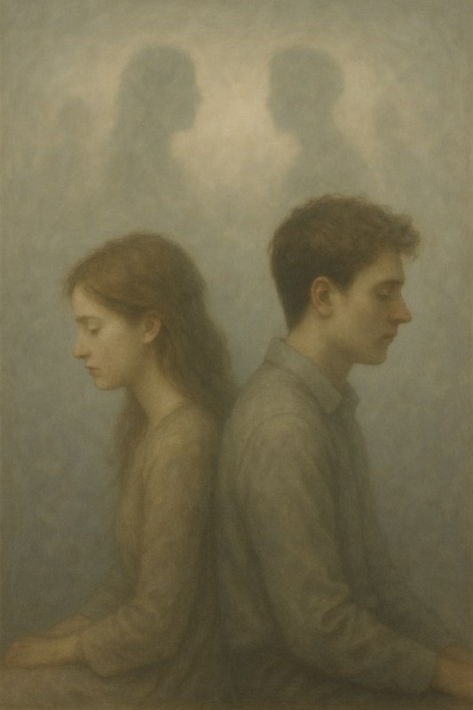

Инсон буюк мавжудот

Бизнинг ҳаётимизда учрайдиган одамлар — тасодиф эмас. Ҳар бир учрашув, ҳар бир қиёфа, ҳар бир руҳий туйғу — бу биз ўз оиламизда, орзуларимизда, атрофимизда ёки қалб тубида аввалдан шакллантирган тасаввурларимизнинг аксидир.
Қалбимизда, онгимизда ва орзу-хаёлларимизда “идеал инсонлар” сиймосини чизиб, биз уни ўзимиз ҳам билмаган ҳолда ҳаётимизга чорлаймиз. Шу боис, инсонларнинг ҳаётимизда пайдо бўлиши — бу тасодиф эмас, балки қалб ва тафаккуримизнинг чақириғига жавобдир.
Ҳақиқий учрашувлар қалблар тайёр бўлганида юз беради. Кимнидир яхши кўриш, дўстлашиш ёки қадрлашдан олдин, биз унга ич-ичимизда жой тайёрлаймиз. Ҳар бир инсон бизнинг руҳий оламимизга жавоб сифатида кириб келади: ё яхшилик ўргатиш учун, ё дарс бериш учун, ёки далда, ёки муҳаббат ва руҳий ўсишга сабабчи бўлиш учун. Шундай экан, биз истаган одамлар аввало қалбимизда туғилади ва кейингина ҳаётимизда жисмоний кўриниш олади.
Агар сиз хоҳлаган инсонни учратмоқчи бўлсангиз, аввал уни қалбингизда яратинг. Орзу қилинг, тасаввур этинг, ишонинг ва қалбингизни тозаланг — шунда сиз орзу қилган инсон сизнинг ҳаётингизга, албатта, қадам қўяди.
Ҳар бир алоҳида шахснинг ижобий ва салбий жиҳати нуқтаи назаридан эса - инсонларни қайси кўринишда тасаввур этсак, шу қирраси сизга намоён бўлади.